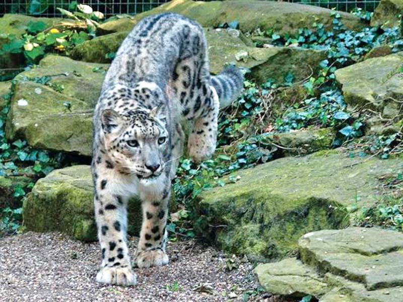
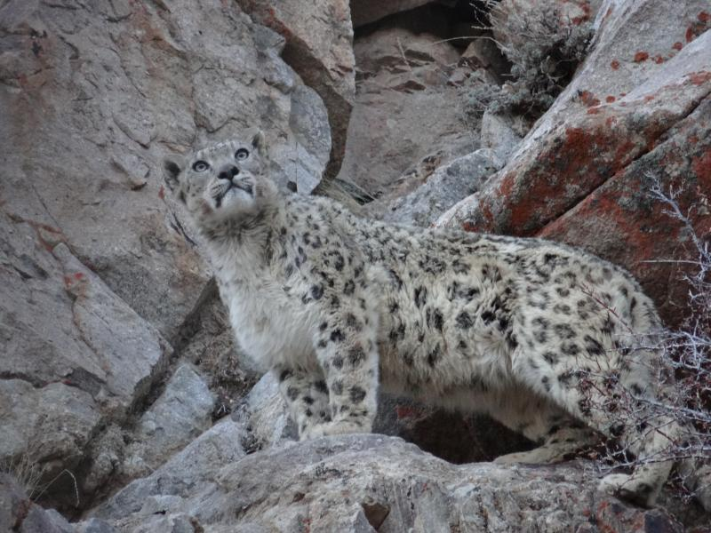

Voi
Tên tiếng anh: Snow Leopard
Báo tuyết (danh pháp hai phần: Panthera uncia) là một loài thuộc họ mèo lớn sống trong các dãy núi ở Nam Á và Trung Á. Cho đến gần đây nhiều nhà phân loại học vẫn đưa báo tuyết vào trong chi Báo cùng với một vài loài thú to lớn họ mèo khác, tuy nhiên chúng không phải là một con báo hoa mai thực thụ mà theo phân loại thì chúng có quan hệ anh em với loài hổ.
Theo nguyên tắc phân loại sinh học, báo tuyết đã được phân loại là Uncia uncia kể từ đầu những năm 1930. Dựa trên kiểu gen nghiên cứu, chú mèo lớn này đã được coi là một thành viên của chi Panthera từ năm 2008. Vấn đề này vẫn đang được cân nhắc.
Trong mùa hè thông thường chúng sống trên các cành cây ở những khu đồng cỏ ven núi và các khu vực núi đá cho tới tận cao độ 6.000 m. Trong mùa đông, chúng xuống thấp vào các khu rừng ở cao độ tới khoảng 2.000 m. Chúng chủ yếu sống cô độc.
Chúng là loài thú ăn tạp, chúng ăn tất cả những thức ăn gì mà chúng tìm thấy; thông thường chúng có thể giết chết cả những con vật có kích thước gấp 3 lần chúng, bao gồm cả gia súc. Chúng cũng phục kích các con mồi nói trên khi có thể. Thức ăn của chúng bao gồm sơn dương (các loài thuộc chi Capra), cừu hoang Himalaya (Pseudois nayaur), cũng như là mác mốt (các loài thuộc chi Marmota) và các động vật gặm nhấm nhỏ khác.
Báo tuyết là loài đang nguy cấp do các tấm da nguyên vẹn của chúng có giá rất cao trên thị trường đồ lông thú. Trong những năm thập niên 1960 tổng quần thể giảm xuống chỉ còn khoảng 1.000 con, nhưng hiện nay đã được phục hồi tới khoảng 6.000 con.
Báo tuyết được nhân giống thành công trong điều kiện giam cầm.
Báo tuyết là biểu tượng quốc gia của người Tatar và người Kazakh (Ka-dắc), và báo tuyết có cánh được tìm thấy trên huy hiệu của Tatarstan (tiếng Nga: Республика Татарстан hay Татария, tiếng Tatar: Татарстан Республикасы/Tatarstan Respublikası). Huân chương báo tuyết được tặng cho những nhà leo núi Xô viết nào đã từng leo tới đỉnh của tất cả năm đỉnh cao trên 7000 m của Liên Xô cũ.
Báo tuyết được xem là biểu tượng quốc gia của một số nước vùng Trung Á.